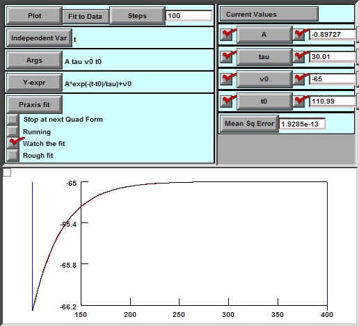

//======================================
// Title: Tutorial #3
// Author: Payne Y. Chang
// File Name: Main.hoc
//======================================
// Display panels
load_file("nrngui.hoc") // Display main menu
load_file("RunControl.hoc") // Display run control
load_file("VGraph.hoc") // Display v plot
//======================================
// soma
create soma // Create soma
// Set properties
soma {
nseg = 1 // Number of segments = 1
diam = 100 // Diameter [um]
L = 100 // Length [um]
Ra = 100 // Axial risistance [ohm-cm]
cm = 1 // Capacitance of membrane [uF/cm2]
insert pas // Insert passive properties
g_pas = 1/30000 // [S/cm2]. Tau = 30 ms
e_pas = -65 // Reversal potential. [mV]
}
R = 1/soma.g_pas // Resistance [ohm.cm^2]
print "Surface Area = ", diam*PI*L, " (um^2)"
print "C = ", soma.cm, " (uF/cm^2)"
print "R = ", R, " (ohm cm^2)"
print "C * R = ", soma.cm * R * 1e-3, " (ms)"
//======================================
// Set one current clamp electrode
objectvar electrode
soma electrode = new IClamp(0.5)
electrode.del = 100 // Delay [ms]
electrode.dur = 1 // Duration [ms]
electrode.amp = -0.4 // Amplitude [nA]
//======================================
// Set recording vectors
objref tVector, vVector
tVector = new Vector() // Time
vVector = new Vector() // Voltage
tVector.record(&t) // Record t
vVector.record(&soma.v(0.5)) // Record v at soma
//======================================
// Codes for saving the data to v.dat
objref outputFile // Output File
outputFile = new File() // Create file object
objref t2Vector, v2Vector // Vectors for recording
t2Vector = new Vector() // Time vector
v2Vector = new Vector() // Voltage vector
// Procedure to save data to a file(v.dat)
proc save_response() {
index = tVector.indwhere(">", 101) // Get the index of the response
print "index = ", index // Print index
t2Vector = tVector.c(index) // Create time vector
v2Vector = vVector.c(index) // Create voltage vector
outputFile.wopen("v.dat") // Open file
outputFile.printf("%d\n", t2Vector.size()) // Save number of points
// Save each point
for i=0, t2Vector.size()-1 {
outputFile.printf("%g %g\n", t2Vector.x(i), v2Vector.x(i))
}
outputFile.close() // Close file
print "Save response to file - Done." // Display Done information
}
//======================================
// Load Parameter Control panel
load_file("ParameterControl.hoc")
//======================================
// File Name: ParameterControl.hoc
// Create "Parameter Control" panel
// Start of an xpanel
xpanel("Parameter Control", 0) // ("Title", 0: vertical lay out)
// Save Response
xbutton("Save Response to File","save_response()")
// Close the xpanel (x, y)
xpanel(1150,10)
FunctionFitter
